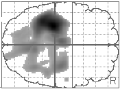
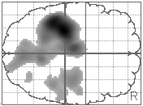

M. Brett1,2, J.F. Stein2 and D.J. Brooks1
1MRC Cyclotron unit, London, UK, 2University Laboratory of Physiology, Oxford, UK
The role of the lateral premotor cortex (LPMC) in man is still not clear. Some results from monkey and human studies have suggested that the LPMC is important when action selection is conditional on abstract cues from the environment. Passingham has shown that monkeys with LPMC lesions are unable to retain or relearn a task which requires them to perform one of two movements on a lever depending on a nearby colour cue, and there is some evidence for this effect in human subjects with focal strokes . However, when the same task is made less abstract by placing the colour cue on the lever itself, LPMC lesions do not impair relearning. We hypothesised that these observations might explain why some patients with apraxia have particular difficulty in such abstract tasks as miming a gesture to command, but find imitation easier. We therefore designed a study to replicate the observations in Passingham's monkeys, using normal subjects and PET.
Subjects and methods
Our subjects were 9 normal right handed volunteers aged 37-57 (4 male, 5 female). Before scanning they were trained for 90 minutes on two tasks: simple imitation (SI) and abstract conditional (AC). Both involved performing a series of four novel gestures with the right hand, but differed in the mode of selection of which gesture to perform. In SI, subjects saw a series of video clips of one of the four gestures, and imitated the video. After each video they saw one of four abstract designs, which they ignored. For AC, they saw a series of the four abstract designs, and learnt to perform one of the gestures for each of the designs. After each design they saw a video clip of the correct gesture, which they ignored. Every subject learned the association very well with no errors after training. They were then scanned, with 5 scans performing SI, 5 scans AC, and 2 scans rest, where they watched the same series of designs / videos, but without performance. Scan order was randomised. We used a bolus injection technique with O15 labelled H20 in a CTI 953B PET scanner. Scans were realigned with SPM96, normalised to the Talairach template with SPM95, then smoothed to 16mm. Statistical analysis used standard settings in SPM96.
Results
Fig 1

Fig 2

Figures 1 and 2: transverse SPMs of activated voxels, uncorrected threshold of p<0.01; Left = posterior
The figures show voxels activated when compared to rest in the SI and AC conditions. The two subtractions are very similar. There was no activation of the premotor cortex at any threshold by either task. Areas activated were SMA, thalamus, left motor, sensory and superior parietal cortex, and secondary visual areas. Right motor, sensory and parietal cortex were activated, but with lower levels of significance. Direct subtraction of SI from AC showed no voxels surviving an uncorrected threshold of p<0.001, and no voxels in SMA or LPMC at any threshold.
Conclusions
This experiment attempted to replicate studies in monkeys and in patients suggesting that conditional action selection tasks depend on the LPMC. In particular we speculated that the LPMC would be more active during an abstract selection task. There was however no hint that the LPMC was activated in either the abstract or imitation task compared to rest. We suggest that these results are correct in showing that the LPMC is not much involved in these tasks late in learning. The LPMC should not be seen as performing one particular function in action selection, but rather as a key area in the design of movement and learning of cue to action associations.